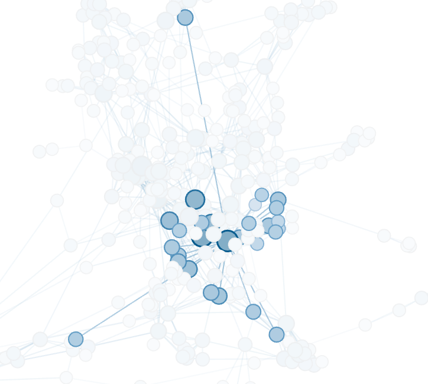

Data Science Portfolio
A collection of small side projects developed in my spare time.
Featured Projects

St. Louis Crime Analysis: When and Where?
St. Louis currently has one of the highest crime rates in the United States, and it happens to be my new home! This analysis asks the question "When and where are those crimes happening?" by reviewing the past four years of crime data from the St. Louis Metropolitan Police Department.
St. Louis currently has one of the highest crime rates in the United States, and it happens to be my new home! This analysis asks the question "When and where are those crimes happening?" by reviewing the past four years of crime data from the St. Louis Metropolitan Police Department.
Keywords: R, Geospatial Analysis, Animated Plots

The Evolution of Cancer Research: 200 Years of Progress
Analysis of metadata from nearly 2 million cancer-related scientific journal articles from the last 200+ years. Publication dates, article titles, and author lists are used to visualize the progress and history of one of the biggest biomedical research areas of the 21st century.
Analysis of metadata from nearly 2 million cancer-related scientific journal articles from the last 200+ years. Publication dates, article titles, and author lists are used to visualize the progress and history of one of the biggest biomedical research areas of the 21st century.
Keywords: Python, Jupyter Notebook, NLP, Social Network Analysis
Other Projects
Disney+ Opening Week: Sentiment Analysis on Twitter
Sentiment analysis of over 100,000 Tweets collected from Twitter in the days immediately following the release of Disney's streaming service, Disney+. The analysis provides quantitative evidence showing the overall positive response to the streaming platform, but also identifies some critical feedback about areas where the service could improve.
Sentiment analysis of over 100,000 Tweets collected from Twitter in the days immediately following the release of Disney's streaming service, Disney+. The analysis provides quantitative evidence showing the overall positive response to the streaming platform, but also identifies some critical feedback about areas where the service could improve.
Keywords: Python, R, Twitter API, NLP, Sentiment Analysis
Fast Food and Obesity: A Micro Project
Basic exploratory analysis of a fast food dataset found on Kaggle, combined with additional datasets about US State populations and obesity rates. This analysis concludes that states with higher obesity rates have a higher number of fast food restaurants than what would be expected based on the state population, based on the data available.
Basic exploratory analysis of a fast food dataset found on Kaggle, combined with additional datasets about US State populations and obesity rates. This analysis concludes that states with higher obesity rates have a higher number of fast food restaurants than what would be expected based on the state population, based on the data available.
Keywords: R, Exploratory Analysis